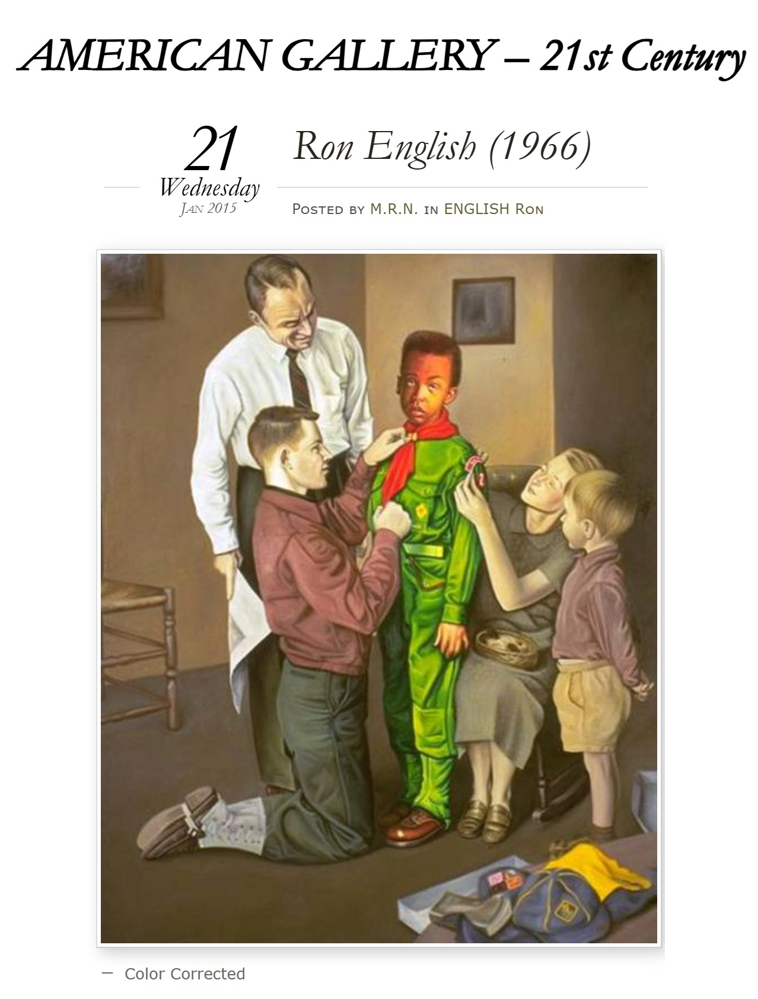

Exhibitions
Revisionist Modernism, The Museum of Contemporary Art, Washington, D.C., US, December 2, 1994–January 1, 1995.


Black Art, Rockville Arts Place, Rockville, Maryland, US, February 1–25, 1995.
Agit Pop America, Gallery Stendhal, New York, New York, US, April 3–30, 1997.

Literature
Ron English, Popaganda: The Art & Subversion of Ron English (San Francisco: Last Gasp, 2001), p. 82. ISBN 1-887128-60-3.

Ron English, Fauxlosophy: The Art of Ron English (San Francisco: Last Gasp, 2016), p. 186. ISBN 978-0867196566.

Ron English, Original Grin: The Art of Ron English (Paris: Cernunnos, 2019), p. 145. ISBN 978-2374950938.

Tarssa Yazdani, “Agit-Pop America,” Inter alia, 1995.


David Jenison, “Art - Ron English,” Hypno Magazine, January–February 1996, p. 35.

aldanov, “Художник Рон Инглиш” (“Artist Ron English”), LiveJournal, November 15, 2010. Online.

Matt Ringer, “Popaganda: The Art & Crimes Of Ron English At Gallery5,” RVA Magazine, 2006.

Linda VanGrack Snyder, “Reliving black history thorugh the camera's lens,” Montgomery Gazette, vol. 13, no. 12, February 3, 1995, p. B-1.


“Modern English,” Juxtapoz, Spring 1998, p. 39.

Claude Solnik, “The Original Prankster: Behind the Gleefully Subversive Art of Ron English,” Gear, December 2001.


Dorothee Sölle, “Auschwitz did not end in Auschwitz,” The Witness, vol. 79, no. 10, October 1996.

Judith Schlesinger, “English as a Second Language,” Topia, Spring 1997, pp. 8–9.


Nancy Ungar, “Shedding light on black,” Rockville Gazette, Wednesday, February 1, 1995.

Agit-Pop America, 1996. Cover.
Ron English, “Ron English AKA the Propaganda Pop Master,” Also Known As, 2021. Online.


Provenance
Private collection.
Ancillary Documentation

